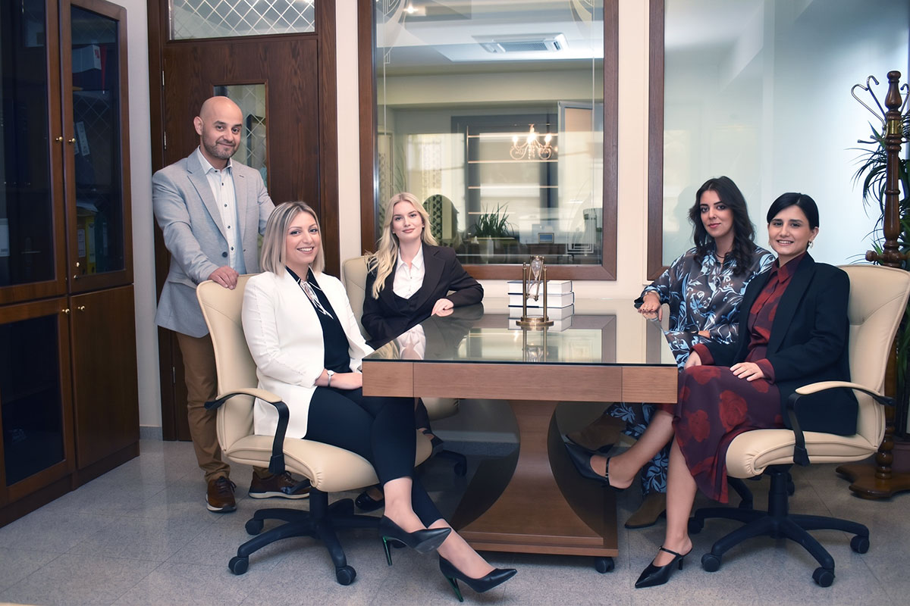
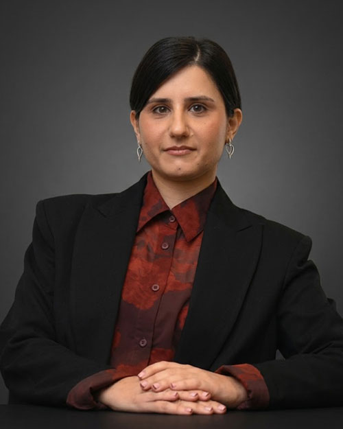
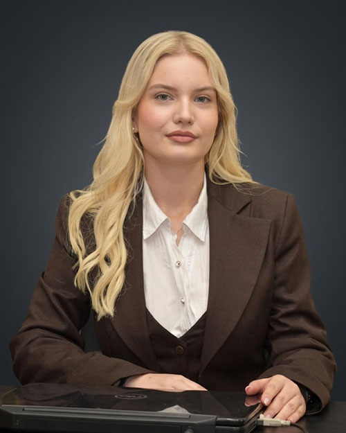
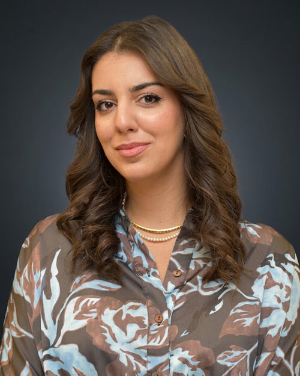

Ποιοι Είμαστε
Μία ομάδα νομικών, μία κοινή προσπάθεια
Λάζαρος Θ. Κουμπουλίδης – Φωτεινή Μιχ. Κύρτσιου & Συνεργάτες. Δικηγορικά γραφεία στη Βέροια, από το 1998.
Η Φιλοσοφία Μας
«Μια ομάδα νομικών και συνεργατών που μας ενώνει η κοινή προσπάθεια για ποιοτική παροχή ολοκληρωμένων νομικών υπηρεσιών στα πλαίσια της συμβουλευτικής ή της "μαχόμενης" δικηγορίας.»
Χρησιμοποιούμε την τεχνολογία για να εξαλείψουμε τη φυσική απόσταση και να παρέχουμε εξειδικευμένες νομικές υπηρεσίες. Τιμάμε την επιλογή του κάθε εντολέα μας ξεχωριστά και προσαρμόζουμε τις υπηρεσίες μας σύμφωνα με τα δικά του πρότυπα και ανάγκες, χτίζοντας μια σχέση συνεργασίας με αμφίδρομη εμπιστοσύνη και σεβασμό.
Απώτερος στόχος μας είναι να συμβάλλουμε μέσω της δουλειάς μας και ενός διαρκούς «διαλόγου» με την κοινωνία, στην επικράτηση των θεμελιωδών αξιών της Ισονομίας και Δικαιοσύνης, ως των βασικών δομικών συστατικών μιας Ελεύθερης Κοινωνίας Πολιτών.
Με Ανθρώπινη Προσέγγιση...

Οι Ιδρυτές
Λάζαρος Κουμπουλίδης & Φωτεινή Κύρτσιου

Λάζαρος Κουμπουλίδης
Δικηγόρος παρ' Αρείω Πάγο · Ιδρυτής
Γεννήθηκε στη Βέροια το 1972. Το 1996 αποφοίτησε από το Τμήμα Νομικής του Αριστοτέλειου Πανεπιστημίου Θεσσαλονίκης. Γνωρίζει την αγγλική γλώσσα. Είναι «μάχιμος» δικηγόρος με ατομικό γραφείο από το 1998.
Ασχολείται με όλο το φάσμα της δικηγορικής ύλης, με έμφαση τις υποθέσεις Ποινικού δικαίου σε όλο του το εύρος (ανθρωποκτονίες, βιασμοί, ληστείες κ.ά., αλλά και οικονομικά εγκλήματα), στη συμβουλευτική εμπορικών επιχειρήσεων, το Εργατικό Δίκαιο, τροχαία ατυχήματα, Δίκαιο Συλλόγων, Λατομικό Δίκαιο, και άλλα εξειδικευμένα θέματα.
Έχει αναπτύξει έντονη κοινωνική δράση με συμμετοχή σε πολιτιστικούς συλλόγους (Εύξεινος Λέσχη Βέροιας, Σύλλογος Κομνηνίου Βέροιας), αθλητικούς συλλόγους (Ποδηλατικός Περιβαλλοντικός Σύλλογος, Σύλλογος Αντισφαίρισης), και είναι ιδρυτικό μέλος και πρόεδρος του Συλλόγου Κοινωνικής Δράσης «Ανθρώπινο Δυναμικό Βέροιας».

Φωτεινή Κύρτσιου
Δικηγόρος παρ' Αρείω Πάγω · Συνιδρύτρια
Η Φωτεινή Κύρτσιου είναι Δικηγόρος παρ' Αρείω Πάγω με εικοσαετή επαγγελματική εμπειρία, ασκώντας μάχιμη δικηγορία σε όλο το φάσμα της νομικής ύλης. Αναλαμβάνει την εκπροσώπηση εντολέων σε αστικά, ποινικά και διοικητικά δικαστήρια, καθώς και την παροχή συμβουλευτικών υπηρεσιών σε φυσικά και νομικά πρόσωπα.
Εκπαίδευση
Είναι πτυχιούχος του Τμήματος Νομικής του Αριστοτελείου Πανεπιστημίου Θεσσαλονίκης (2003). Κατέχει Μεταπτυχιακό Δίπλωμα Ειδίκευσης στη «Διοίκηση Πολιτισμικών Μονάδων» από τη Σχολή Κοινωνικών Επιστημών του Ελληνικού Ανοικτού Πανεπιστημίου (2009). Παράλληλα, έχει ολοκληρώσει παιδαγωγικές σπουδές στην Ανώτατη Σχολή Παιδαγωγικής και Τεχνολογικής Εκπαίδευσης (ΑΣΠΑΙΤΕ), Παράρτημα Ιωαννίνων (2011). Μιλά αγγλικά και γαλλικά, ενώ διαθέτει πιστοποίηση γνώσης ηλεκτρονικών υπολογιστών. Ήδη παρακολουθεί με επιτυχία (2026–2027) το Διατμηματικό Πρόγραμμα Μεταπτυχιακών Σπουδών «Δημόσια Διοίκηση» του Διεθνούς Πανεπιστημίου Ελλάδος (ΔΙ.ΠΑ.Ε.).
Κοινωνική & Συνδικαλιστική Δραστηριότητα
Διαθέτει ενεργή συνδικαλιστική και κοινωνική δράση. Έχει διατελέσει εκλεγμένο μέλος του Διοικητικού Συμβουλίου και Γενική Γραμματέας του Δικηγορικού Συλλόγου Βέροιας κατά την περίοδο 2017–2021, ενώ από το 2026 (θητεία 2026–2029) συμμετέχει εκ νέου ως εκλεγμένο μέλος στο Διοικητικό Συμβούλιο του Δικηγορικού Συλλόγου Βέροιας. Επιπλέον, την περίοδο 2022–2024 υπήρξε εκλεγμένο μέλος του Διοικητικού Συμβουλίου του Συλλόγου Κοινωνικής Παρέμβασης «ΕΡΑΣΜΟΣ», ο οποίος επικεντρώνεται στην καταπολέμηση της έμφυλης βίας και την προάσπιση των δικαιωμάτων και της ισότητας των γυναικών.
Συνέδρια & Ομιλίες
Συμμετέχει τακτικά σε επιστημονικά συνέδρια και ημερίδες ως ομιλήτρια. Ενδεικτικά, το 2019 πραγματοποίησε ομιλία με θέμα «Ενδοοικογενειακή Βία και Οικονομική Κρίση» σε ημερίδα στη Βέροια με θέμα «Εκμετάλλευση Ανθρώπου από Άνθρωπο» και συμμετείχε στο 14ο Πανελλήνιο Συνέδριο Δικηγορικών Συλλόγων στις Σέρρες με θέμα «Δικηγορία και Δικαιοσύνη στη Νέα Εποχή». Το 2020 έλαβε μέρος σε εκδήλωση της Συντονιστικής Επιτροπής Δικηγορικών Συλλόγων Ελλάδος στο Καστελλόριζο με αντικείμενο το διεθνές δίκαιο και τις θαλάσσιες ζώνες, και συμμετείχε ως ομιλήτρια στην 11η Επιστημονική Ημερίδα Καρδιολογίας του Νοσοκομείου Βέροιας, αναπτύσσοντας το θέμα «Συνήθη νομικά προβλήματα στην ιατρική πράξη».
Η Ομάδα
Οι Συνεργάτες μας

Γεωργία (Γιούλη) Καραγιάννη
Δικηγόρος · Μέλος Δικηγορικού Συλλόγου Βέροιας από το 2018
Καταγωγή από τον Άγιο Γεώργιο Γρεβενών. Απόφοιτη της Νομικής Σχολής του Δημοκριτείου Πανεπιστημίου Θράκης, με μεταπτυχιακό στις Ποινικές & Εγκληματολογικές Επιστήμες. Γνωρίζει αγγλικά και ισπανικά.

Ευαγγελία (Εύη) Παραστατίδου
Δικηγόρος · Μέλος Δικηγορικού Συλλόγου Βέροιας από το 2025
Καταγωγή από τον Άγιο Γεώργιο Βέροιας. Απόφοιτη της Νομικής Σχολής του Αριστοτελείου Πανεπιστημίου Θεσσαλονίκης, με μεταπτυχιακό «Δίκαιο και Οικονομικά» από το Πανεπιστήμιο Μακεδονίας. Διετέλεσε μέλος της ELSA Θεσσαλονίκης. Γνωρίζει αγγλικά (C2) και γαλλικά (B2).

Χρύσα Μουρτζίλα
Ασκούμενη Δικηγόρος
Απόφοιτη της Νομικής Σχολής του Αριστοτελείου Πανεπιστημίου Θεσσαλονίκης (Απρίλιος 2025). Ασκείται στο γραφείο στη γενέτειρά της, τη Βέροια, ενώ παρακολουθεί το μεταπτυχιακό «Δίκαιο και Οικονομικά» του Πανεπιστημίου Μακεδονίας. Κατέχει πιστοποίηση ECDL και γνωρίζει αγγλικά (C2).
{kind=link}
{kind=link}
{kind=link}
{kind=link}
{kind=link}
{kind=link}
{kind=link}
{kind=link}
{kind=link}
{kind=link}
{kind=link}
{kind=link}
{kind=link}
{kind=link}